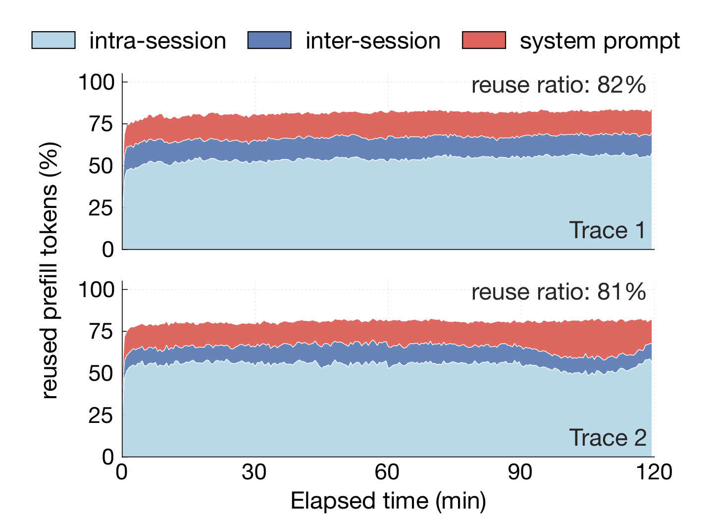
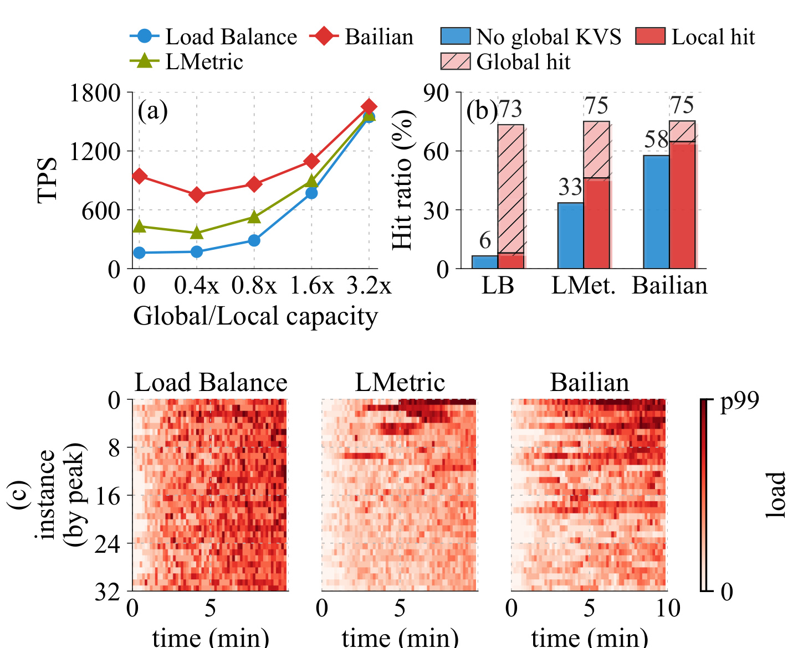
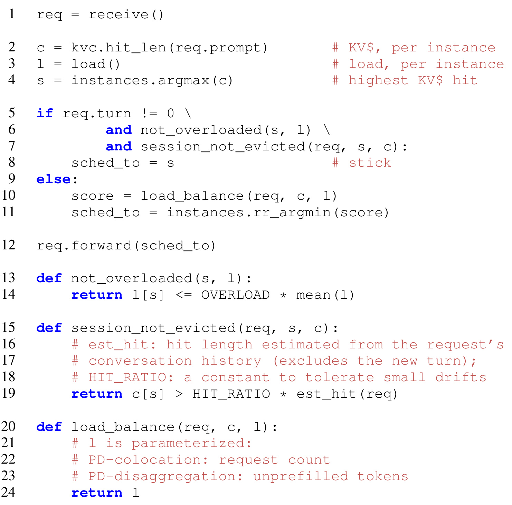
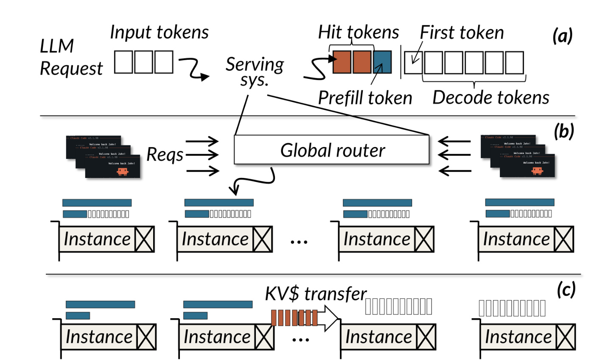
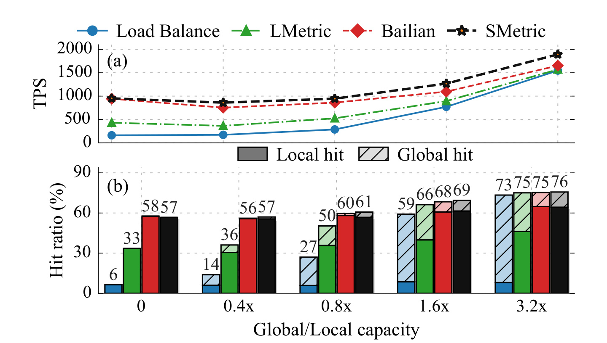
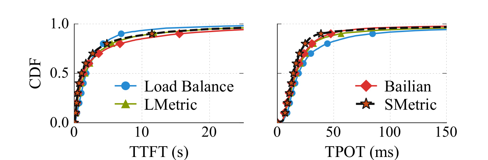
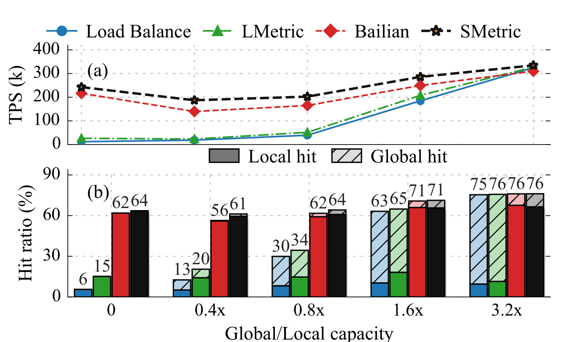
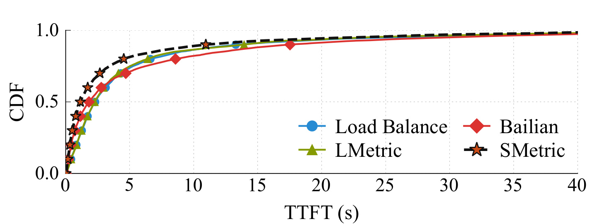
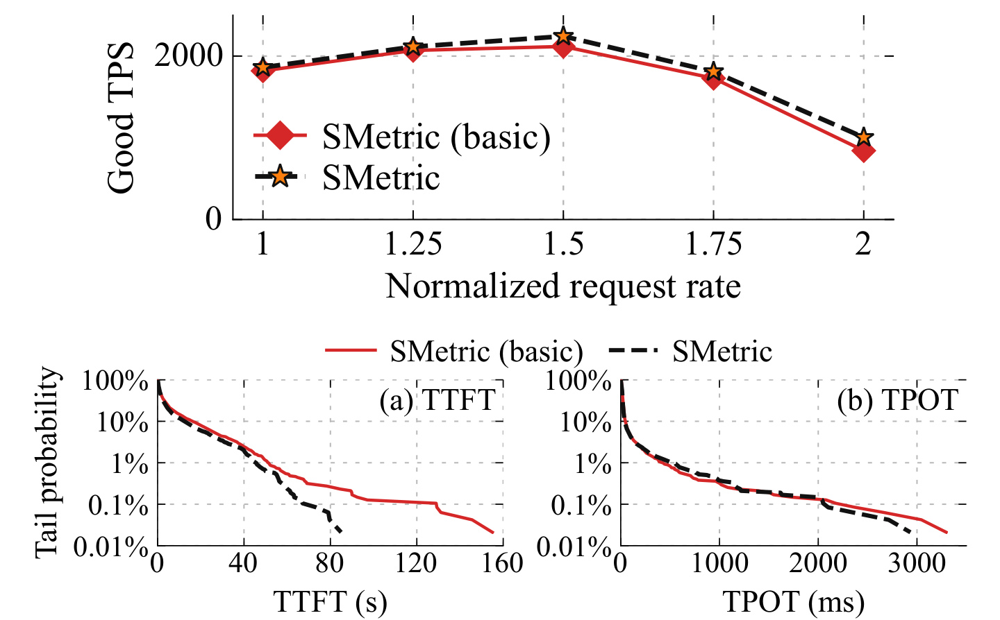

SMetric：面向 Agent Serving 的均衡会话中心调度
SMetric 的完整标题是 SMetric: Rethink LLM Scheduling for Serving Agents with Balanced Session-centric Scheduling。作者为 Jiahao Wang、Kaizhan Lin、Kaixi Zhang、Jinbo Han、Xingda Wei、Sijie Shen、Chenguang Fang、Wenyuan Yu、Rong Chen 与 Haibo Chen；第一作者所在机构为上海交通大学并行与分布式系统研究所，合作机构包括阿里巴巴集团。论文于 2026 年 7 月 9 日公开为 arXiv:2607.08565。论文承诺在正式发表时开放 SMetric 与 trace，但本轮未核验到 SMetric 独立实现仓库；正文提到的 GitHub 项目主要是 AIBrix、AIGW、LMCache、llm-d 等依赖或基线。
这篇工作不是改模型结构，而是重新定义 Agent 专用 LLM 集群应该怎样路由请求。它把一次 Agent 任务视为由多轮 LLM 请求构成的 session：首轮决定任务，后续轮次追加工具返回与历史上下文。论文先用两条真实生产 trace 说明，这类 workload 的目标和缓存结构均不同于人类聊天，再提出一种仅在首轮主动负载均衡、后续优先保持本地 KV 命中的路由策略，并用全局 KV tier 为跨实例重平衡兜底。
Agent 只有拿到完整响应后才能继续行动，因此集群 TPS 成为首要目标；但真实 Agent trace 中超过 80% 的 prefill token 又可以复用。现有 cache-affinity scheduler 为追求本地 KV 命中把多个 session 压到少数实例，造成部分实例过载、其余实例空闲，反而把集群吞吐限制在最热实例上。
1. 背景和问题
论文把研究对象严格限定为 agentic serving：模型提供方运行一个由许多模型实例组成的专用集群，接受外部 Agent 通过标准 LLM API 发来的请求；提供方既不运行 Agent，也看不到 Agent 的内部决策逻辑。和普通 chat serving 相比，变化发生在 workload 而非 API。一个 Agent 会在同一任务里多次请求模型，每轮都携带此前完整对话，模型生成的工具调用触发下一轮。于是每个 session 形成追加式前缀：第 (t) 轮输入几乎包含第 (t-1) 轮输入和输出，给跨请求 KV cache 复用创造了极强局部性。
第一个变化是性能目标。人类可以边看流式 token 边阅读，因而 TTFT 和 TPOT 经常是首要体验指标；Agent 在完整响应到达前通常不能执行下一步工具调用。论文因此把 cluster-wide tokens per second 置于第一位：Agent 单次响应往往更长，TPS 决定单位硬件能够推进多少任务，也决定排队是否持续增长。不过作者没有因此放弃延迟约束。响应过慢仍会触发超时，所以评估使用 TPS within SLO，只计入同时满足 TTFT 与 TPOT 门槛的请求所贡献的 token，再在 offered request rate 扫描中取最大值。这里的转变是“TPS 优先、per-token latency 放宽”，不是“只看吞吐”。
第二个变化是 KV cache 的支配程度。Prefill 计算输入 token 的 K/V 张量，decode 再逐 token 产生输出；若后来的请求拥有相同前缀，就可以跳过命中部分的 prefill 计算。普通聊天 workload 的复用比例约为 54%-62%，而论文的两条生产 trace 都超过 80%。更重要的是，约 67% 的复用来自同一个 session 的历史轮次，首轮请求也能从相同 Agent framework 的 system prompt 获得 18%-20% 的复用。缓存不再只是辅助优化，而成为调度器不可忽略的主要计算供给。
问题在于本地命中和负载均衡并不天然一致。多数现有 scheduler 会为每个实例计算一个同时考虑本地命中与当前负载的 score。Agent session 的 follow-up 几乎总能在上一轮实例获得最长命中，因此 cache-aware 策略会把整段 session 固定在首轮落点。不同 session 又可能共享相似 system prompt，首轮也会被少数已经缓存模板的实例吸走。结果是这些实例连续承接完整长 session，其他 GPU 即使空闲也无法贡献 token；调度器节省了 prefill，却因为负载倾斜损失更多 cluster TPS。
简单改成纯负载均衡也不够。论文考虑的缓存层次包含 GPU HBM 的 local tier，以及通过 PCIe/RDMA 访问本地 CPU、远端 CPU 或远端 GPU 的 global tier。若目标实例没有本地 KV，它可以从全局层取回，因而全局层充分供给时，负载均衡不必完全放弃复用。然而全局层容量和带宽都有限；若所有请求都跨实例派发，大量前缀取回会占满 RDMA 或装不下活跃 session。没有全局层或供给较小时，本地命中仍然直接决定 prefill 计算量。真正的设计题不是在“cache 或 balance”中二选一，而是只把必要的一小部分流量交给全局层，同时让 session 在实例间分散。
论文还指出 session 自身具有长尾：两条 trace 中 token 数最多的 25% session 贡献超过 80% token。这个事实意味着“均衡首轮”不能保证永远均衡，因为两个开始很短的 session 可能同时在一个实例上长大。但大规模服务的并发请求远多于实例，trace 中一分钟到达请求数与实例数之比平均为 43 和 48，且从未低于 30；基于最少 inflight token 的仿真把中位 max/mean 不均衡压到 1.7 与 1.5。也就是说，workload 具备可均衡性，欠缺的是一个既保留局部缓存又能处理长尾偏载的路由机制。
从系统边界看，SMetric 的论证依赖三个条件。第一，标准 API 仍携带完整历史，使 router 能推断 turn；第二，local tier 能在相邻轮次间保住大多数 session KV；第三，global tier 至少能承担少量首轮共享 prompt 和偶发迁移流量。若 Agent 丢弃历史、session 间隔极长、或全局层完全缺失，策略会退化。论文确实覆盖不同全局层容量，但没有把这些条件扩展成跨云、跨模型、跨网络拓扑的普遍定理。
2. 方法
2.1 从两条真实 trace 得到的 workload characterization
方法并不是从一个抽象 scheduler 开始，而是先建立 workload 事实。两条 trace 都来自 BAILIAN 为商业 coding agent 提供服务的大规模集群，采集于 2026 年 5 月 29 日 10:00-12:00 的同一高峰时段；Trace 1 服务 TB 级模型，Trace 2 服务约 280B 参数模型。每条请求记录哈希后的内容、到达时间，以及 session ID、parent request ID、turn number 和触发来源。哈希内容让作者能在不暴露明文的前提下按 KV block 计算前缀命中；复用率的分母是全部 prefill token，分子是理想无限存储下能够跳过计算的命中 token。
作者得到四个直接影响路由的观察。其一，稳态复用率约为 82% 与 81%。其二，约 67% 的复用来自同一 session，且这是下界，因为多 Agent fork 的不同 session 也可能共享父任务上下文。其三，共享 system prompt 占全部复用的 18% 与 20%，说明首轮即使不留在某个固定实例，也可能通过全局层取回模板。其四，约 90% 的 KV 复用在上次使用后 100 秒内发生；工具调用触发请求占 92.9% 与 94.2%，快速的 Agent 反馈环使上一轮 KV 很可能仍在 local tier。高复用、强 session locality、短复用间隔与首轮模板复用共同支撑“首轮可分散、后续可粘滞”。

Figure 5 不是只给一个平均数，而是画出完整两小时窗口。纵轴是全部 prefill token 中可复用部分，横轴是经过分钟；浅蓝、深蓝、红色依次代表 intra-session、inter-session 与 system prompt。两条曲线起点的上升来自 cache warm-up，随后分别稳定在约 82% 与 81%。浅蓝区域始终最大，显示主要计算节省来自同一 session 的历史，而不是无关用户恰好拥有相同文本；红色区域又说明首轮共享模板仍有显著价值。这张图同时限定了 SMetric 的适用范围。若 workload 主要由互不相关的单轮请求组成，浅蓝区域会缩小，“首轮决定后续”的路由杠杆也会消失；若 system prompt 几乎不共享，首轮被均衡到新实例后只能重算前缀。图中两条生产 trace 的相似形状为机制提供了比单一模拟更强的起点，但它们都来自同一产品、同一两小时时段，尚不足以证明所有 Agent workload 都具有相同比例。
负载均衡程度按窗口内最热实例与实例平均 token load 的比值计算：
2.2 Balanced session-centric routing：只均衡首轮请求
现有 scheduler 的共同接口可以写成：

Figure 11 的上左图把 global/local 容量比从 0 扫到 3.2x。没有全局层时，BAILIAN 的 TPS 显著领先，因为它保住 58% 本地命中；LMetric 和纯负载均衡只有 33% 与 6%。全局层充分后，三种方法的总复用率却收敛到 73%-75%，只是纯负载均衡的大部分命中来自斜线表示的 global hit。换言之，跨实例派发没有必然丢掉计算复用，但把数据移动压力转移到了全局层。
下方热图揭示另一半矛盾：纯负载均衡的 mean max/mean 为 2.1x，LMetric 与 BAILIAN 分别为 3.0x 和 2.7x，cache-aware 策略的热点行更集中。全局层能够补回 miss，却不会自动把已粘滞的 session 拆散。SMetric 因此不再试图为每个请求连续调节 cache 与 load 权重，而是改变决策粒度：把 session 的第一轮当成可均衡单元，后续轮次沿 local hit 自然跟随。Figure 12 的验证给出鲜明对照：纯负载均衡只有 4.0% follow-up 回到首轮实例，BAILIAN 式 cache 优先路由达到 96.6%。
基础分支可写为：
router 不必保存 session-to-instance 表。标准 LLM API 的每个请求携带完整历史，SMetric 通过历史 message 数推断 turn；如果 Agent 丢弃历史，推断会把它视为首轮。这个失败是保守的，因为没有历史也几乎没有 session KV 可复用。状态无关设计避免维护活跃 session、同步落点和回收永不显式结束的 session，但其兼容性仍取决于 API 消息结构是否能稳定映射为轮次。
2.3 Overload 与 eviction guard：给 session stickiness 加安全阀
仅均衡首轮仍会遇到尾部。两个短 session 可能落在同一实例并随后同时变长；top 25% session 贡献超过 80% token，偶发组合足以形成热点。SMetric 的第一个 guard 检查最大本地命中实例 (s) 是否过载：
第二个 guard 识别本地 KV 已被逐出的 session。请求携带历史，所以 router 能估计在缓存完整时应命中的历史长度 (mathrm{est_hit}(r))，并与最大实际命中比较：

Figure 13 的顺序很重要。第 2-4 行先一次性取得各实例命中向量 (c)、负载向量 (l) 和最大命中实例 (s)；第 5-7 行要求请求不是首轮、(s) 未过载、session KV 仍未逐出，三个条件同时成立才在第 8 行 stick。任何一个条件失败都走第 10-11 行的负载均衡，而不是用另一个加权 score 勉强折中。第 13-19 行对应上面的两个判定式。
最后四行给出一个容易忽略的系统细节：load() 并非跨架构固定指标。PD colocation 使用 request count，PD disaggregation 使用 unprefilled tokens。前者的一台实例同时承担 prefill 和 decode，简单 request count 是生产设置下采用的负载信号；后者只给 prefill 实例路由，尚未计算的 prompt token 更接近实际剩余工作量。伪代码也说明论文没有训练目标、梯度更新或模型参数，所有机制都位于请求进入模型实例之前的 cluster router。
核心伪代码压缩为以下等价流程，保留论文的条件次序：
c = local_kv_hit_length(request, each_instance)
l = load(each_instance)
s = argmax(c)
if turn > 0 and not_overloaded(s, l) and session_not_evicted(request, s, c):
target = s
else:
target = round_robin_argmin(l)
forward(request, target)
这段流程还有一个解释边界：Figure 24 同时移除两个 guard 构成 SMetric basic，论文没有分别报告只移除 overload 或只移除 eviction 的结果。因此可以说 guard 组合改善尾部排队，不能从现有消融推断哪个 guard 贡献更大。
2.4 两类 serving architecture 中的负载信号与 KV 流向
SMetric 在两种架构上共享同一会话分支，但应用位置不同。PD colocation 让一个实例完成请求的 prefill 与 decode，所有实例都可能处理 prefill，因而都要访问 global tier。PD disaggregation 把 prefill 与 decode 放到两个集群：prefill 实例生成 KV 后通过 RDMA 交给 decode 实例；跨请求 KV 复用只影响 prefill，所以 SMetric 只调度 prefill 集群。这个差异决定实验口径：共置报告包含输入与输出 token 的 cluster TPS、TTFT 和 TPOT，解耦只报告 prefill TPS 与 TTFT。

Figure 4(a) 先把一次请求分成 prefill 与 decode：命中的彩色 token 可以直接复用，未命中的输入 token 需要新算 KV，随后输出首 token 并逐步 decode。(b) 中 global router 把请求送到能够完成两阶段的任一实例，session stickiness 同时影响 prefill 计算与该实例的 decode 批次；负载不均衡在吞吐上还可能被更大 decode batch 部分吸收。Figure 4(c) 的 prefill 实例与 decode 实例分开，中间有明确 KV transfer。此时 cache affinity 与全局层读取发生在 prefill 侧，decode 侧不在论文的 SMetric 调度评估范围内。Prefill 计算更密集，GPU 饱和后继续增加 batch 或排队不会像 decode 那样用更大 batch 同步产生更多 token，所以偏载更直接损伤 prefill TPS。这也是解耦实验的相对增益上限可达到 34%、却不能据此声称完整服务链路也提升 34% 的原因。
全局 KV tier 的数据流还解释了 SMetric 为什么只均衡首轮。首轮主要复用跨 session 共享的 system prompt，落到哪个实例都可从全局层取回；后续轮次的长历史留在上一轮 GPU local tier，原地命中既省计算也省 RDMA。只有过载或逐出时才把长 session 改投新实例。这样 global tier 承担的是首轮小比例流量和尾部恢复，而不是每个 follow-up 的全部历史。若把全局层看成无限带宽，纯负载均衡已经接近可用；SMetric 的价值恰恰在于容量受限时仍尽量保住 local hit。
3. 实验结果
3.1 Testbed、replay 和指标口径
测试集群有 4 台 GPU 服务器，每台 8 张 NVIDIA H20 96GB HBM3、160 个 CPU core 和 1280GB 主存，节点间通过 200Gbps RDMA 连接。Qwen3-Coder-30B-A3B 单 GPU 构成一个实例，共 32 个；Qwen3-235B-A22B-FP8 每实例至少 4 GPU，共 8 个。Serving stack 使用 vLLM，global tier 使用 Mooncake 与 LMCache，scheduler 单独运行在 64 core、256GB DRAM 的 CPU 服务器。基线包括 BAILIAN 生产策略、LMetric、纯负载均衡；解耦场景用 Dynamo 替换纯负载均衡基线。
全部实验 replay Trace 1。因为被测模型生成内容与 trace 记录不同，作者强制生成相同输出长度，并用实际生成内容重写 follow-up 的相关片段，避免输入历史和已缓存 token 不一致。这个处理保持 request arrival 与长度形态，却不是原生产模型逐 token 的真实执行；Trace 2 只做 workload characterization，没有 replay serving 结果。可复现时必须把这一点与“两个 trace pattern 相似”区分开。
共置的主指标是 maximum TPS within SLO：对每个 global tier 容量点扫描 offered request rate，只累计同时满足 TTFT SLO 与固定 30ms TPOT SLO 的请求 token，取最大 cluster-wide TPS。论文没有公开 TTFT 线性 SLO 的具体系数，而是称沿用 BAILIAN 生产目标并与学术实践一致。因此图中的 TPS 是合规 goodput，不是裸吞吐，也不是固定 request rate 的单点。
3.2 PD colocation：10-16% 的适用条件
32 个 Qwen3-Coder-30B-A3B 实例上，SMetric 在存在 global KV store的每个容量点都比当点最强基线高 10%-16%。这个比较对象会随容量点变化，且每个点都先做 request-rate sweep。没有 global store 时，SMetric 与 BAILIAN 在 1% 内，说明首轮均衡需要全局层补回共享 prompt；不能把摘要的 10%-16% 写成无条件收益。全局层充分时，SMetric 本地命中为 64%，BAILIAN 为 65%；SMetric 的 mean max/mean token load 为 2.6x，低于 BAILIAN 3.0x 与 LMetric 3.2x，高于纯负载均衡 2.0x。

Figure 16(a) 中横轴是 Global/Local capacity，从 0 到 3.2x，纵轴是 maximum TPS within SLO。黑色 SMetric 曲线在全局层存在后保持最高，但在 0 容量点和红色 BAILIAN 几乎重合；容量增加时，蓝色纯负载均衡和绿色 LMetric 从全局层获得更多复用，差距逐步缩小。10%-16% 指的是 0.4x、0.8x、1.6x、3.2x 等有全局层点对当点最强基线的比较，不是图上任意两条曲线之间的固定比例。
Figure 16(b) 把每个容量点的 hit ratio 分成本地实色与全局斜线。3.2x 时四种方法总命中约为 73%、75%、75%、76%，差异很小；真正不同的是来源：SMetric 保持较大 local hit，同时又让首轮负载分散。没有全局层时，SMetric 与 BAILIAN 均约 57%-58%，而纯负载均衡只有 6%。这组证据支持“balance 与 reuse 可部分解耦”，也显示解耦依赖 global tier 提供的数据移动预算。
请求率扫描进一步说明收益集中在饱和膝点：1.0x load 时 SMetric 与最强基线在 1% 内，1.5x 时领先 15%，1.75x 时为 4%；2.0x 严重过载后所有 scheduler 的合规 TPS 都下降。系统调度只能推迟饱和并减少热点，不能在供给远低于到达需求时维持线性扩展。

Figure 17 使用全局层充分、1.5x request rate 的配置，CDF 包含所有请求，包括违反 SLO 的请求。SMetric 的 P50 与 P90 TPOT 分别比各分位最强基线低 10% 和 20%；median TTFT 为 1.1 秒，比该分位最接近的 BAILIAN 低 17%，P90/P99 TTFT 也略低于最接近的 LMetric。曲线左移说明更均匀的排队和 local hit 可以同时改善多数请求的首 token 与 decode 节奏。
但 Figure 17 也反驳“所有分位都更好”的说法：SMetric 的 P99 TPOT 高于 BAILIAN。作者选择该设置是因为全局层充分时基线 TPS 已在 SMetric 的 15% 以内；较小全局层下部分基线吞吐损失更大。因而可靠结论是 SMetric 在此设置改善 P50/P90 TPOT 与所有报告 TTFT 分位，同时保留一个 TPOT 极尾例外，而不是无条件降低每种延迟。
8 实例 Qwen3-235B-A22B-FP8 提供有限规模外推。全局层充分时 SMetric 峰值 516 token/s，较 BAILIAN 的跨扫描峰值高 8%，较同 operating point 的 LMetric 高 20%；本地命中 69%、总复用 76%。Median TTFT 为 0.85 秒，较 LMetric 低 24%；P90 TTFT 为 7.7 秒，低 26%。不过只有 8 个实例使路由选择更少，SMetric、LMetric、BAILIAN 的负载比都约 1.6x，不能从该配置推断更大集群的负载差异。
3.3 PD disaggregation：2-34% 是 prefill TPS
解耦实验部署 32 个 Qwen3-30B-A3B prefill 实例，使用 vLLM+Mooncake，并以 LMCache 提供 global tier。指标 prefill TPS 是每秒完成的 prompt token 数：无论 token 是现场计算还是由 KV hit 复用，只要 prefill 侧产出对应 KV 就计数。它不包含 decode token，也不等同于完整响应吞吐。论文称更大模型结果相似但未展示，因此本节证据只覆盖 30B 模型。
SMetric 在全局层容量扫描中比当点最强基线高 2%-34%。1.6x Global/Local 时比 BAILIAN 高 15%；全局层充分的 3.2x 点只比 LMetric 高 2%。区间之所以比共置更宽，是因为 prefill 计算密集：GPU 计算饱和后继续加 batch 或排队不会增加同步产出的 token，偏载直接损失 prefill TPS；decode 反而可能通过更大 batch 在一定程度吸收不均衡。

Figure 22(a) 的纵轴明确标为 TPS(k)，表示 prefill token 吞吐；黑色 SMetric 在 0、0.4x、0.8x 的有限全局层点比其他策略保持更高曲线，3.2x 时四条曲线接近。2%-34% 恰好描述这组容量点上的最小与最大相对差异。若只报告区间上限，会掩盖充分供给时仅 2% 的边际领先，也会把 prefill 专项结果误当成完整服务收益。
Figure 22(b) 显示全局层充分时各方法总复用均约 75%-76%；SMetric 本地命中 66%，BAILIAN 为 68%，说明 SMetric 没有靠大量全局读取换 TPS。对应 prefill token load 的 mean max/mean 为 3.3x，与 BAILIAN 3.3x 相同，低于 LMetric 4.2x 和 Dynamo 式负载基线 4.6x。这里“负载基线反而更不均衡”并不矛盾：解耦基线按尚未 prefill token 评分，图中统计是运行期 inflight prefill token，缓存命中、队列和批处理会改变两者关系。

Figure 23 只画 TTFT，因为实验只评 prefill 实例，论文明确省略 TPOT。SMetric median TTFT 为 1.1 秒，比该分位最接近的 BAILIAN 1.8 秒低 37%；P90 为 10.9 秒，比纯负载均衡 13.3 秒低 18%；P99 为 44.2 秒，比 LMetric 47.4 秒低 7%。最接近基线从中位的 cache-aware 策略变为尾部的 load-aware 策略，印证中位更受 KV hit 影响、尾部更受排队影响。
CDF 中 SMetric 在主要区间左移，但 37%、18%、7% 分别使用不同最接近基线，不能把三者描述成相对同一个系统的整体倍数。也不能把这里的 TTFT 改善与共置架构 TPOT 合并为“解耦端到端 latency 全面改善”：decode 集群没有进入这组评估，KV 从 prefill 到 decode 的传输及 decode 排队仍可能决定完整响应时间。
3.4 Guard 消融、参数稳健性与证据边界
Figure 24 对比完整 SMetric 与同时移除 not_overloaded、session_not_evicted 的 SMetric basic。在相同的 32-instance 30B、全局层充分设置下，guard 对 good TPS 只有温和提升，主要差异出现在 log-scale tail。完整版本的 P90/P99 TTFT 为 12.1 秒与 45.3 秒，basic 为 16.1 秒与 51.2 秒；P95 TPOT 为 82.5ms 与 89.2ms。这个结果把 guard 的作用定位为阻止长 session 聚集和无效粘滞造成的尾部排队。

Figure 24 顶图在 1.0x-2.0x normalized request rate 上比较 good TPS，两条曲线整体接近，只在部分负载点拉开；这说明 SMetric 的主要吞吐来源仍是首轮均衡加 follow-up cache affinity，而不是 guard 本身。底部使用 complementary CDF 和对数纵轴，把普通 CDF 挤在 1 附近的 P90 以上区域展开。TTFT 黑色虚线比红线更快下降，TPOT 的分离更小，与论文给出的数值一致。
这张消融图同时暴露不足：basic 一次移除两个 guard，无法判断 overload 检测还是 eviction 检测贡献更多；参数敏感性也只改变阈值，没有给出误判率、全局层读带宽或迁移次数。Figure 25 显示 OVERLOAD 从 1.0 到无穷时 TPS 在默认值 6% 内，HIT_RATIO 从 0 到 0.75 时在 4% 内，两组总命中率保持 75%-76%。它说明默认阈值位于宽平台，但仅针对同一测试配置，不能证明跨 workload 自动稳健。
综合实验可以支持三项较窄结论。第一，在 Trace 1 replay 和给定硬件/模型上，SMetric 能兼顾 local reuse 与 load balance。第二，共置的 10%-16% 要求存在 global store；无全局层时与 BAILIAN 接近。第三，解耦的 2%-34% 是 prefill TPS，不包括 decode。实验没有线上 A/B、没有 Trace 2 serving replay、没有公开阈值自动调节、没有报告全局层实际 RDMA 带宽曲线，也未展示非 coding agent workload。将结果迁移到搜索推荐、通用对话或多租户推理前，需要重新测量 session locality、首轮比例、KV 生命周期和网络余量。
4. 总结
4.1 我的判断
SMetric 最有价值的地方，是把路由决策从“每个请求怎样在 cache 与 load 之间调权重”改写为“session 的哪个阶段应该优化什么”。两条生产 trace 给出强 session locality，cache-aware scheduler 又自然制造 96.6% 首轮实例粘滞，于是只均衡首轮就能把整段 session 分散；follow-up 保持本地命中，overload/eviction guard 只处理尾部。这个分解简单、router 无状态，也与现有 vLLM、LMCache、Mooncake 组件相容。
证据最扎实的不是某个最大百分比，而是条件链闭合：Figure 5 证明 session reuse 主导，Figure 11 证明 global tier 能补回 reuse 但 cache-aware 仍造成偏载，Figure 13 给出可执行路由，Figure 16/22 分别在两种架构和多种全局层容量下验证。论文也保留了不利边界，例如无全局层时共置收益不足 1%、P99 TPOT 不一定更优、全局层充分时解耦只领先 2%。这种条件化报告比只展示峰值更可信。
4.2 对推荐与大模型系统的启发
对大模型 Agent 平台，首要动作不是照搬 SMetric，而是先做同样的 workload audit：按 session 统计首轮比例、intra-session KV reuse、system prompt reuse、复用间隔、长 session token skew 与一分钟请求/实例比。只有这些指标接近论文假设，session-first routing 才可能成立。工程上线还应把 global-tier read bandwidth、fetch latency、迁移次数和 per-instance queue 加入 guard，而不仅是 request count。
对推荐系统，迁移点主要在生成式推荐、Agent recommender 与带工具调用的搜索链路。用户会话的首个大模型请求可以按负载分散，后续重排、解释、检索改写若复用长上下文则优先留在同一实例；共享 system prompt、schema 和候选模板可放入全局 KV tier。传统召回/排序请求短、独立且 KV reuse 弱时，SMetric 的 session 杠杆可能不成立，普通 least-loaded 或一致性哈希更合适。需要以 workload 证据决定，而非因“推荐也有 session”就默认复用。
4.3 局限与后续跟进
局限至少有四项。第一，两条 trace 来自同一商业 coding-agent 产品、同一两小时高峰，复用长尾还被采集窗口截断。第二，serving 实验只 replay Trace 1，并通过强制输出长度和重写 follow-up 保持 token 一致，和生产模型真实生成仍有差异。第三，主要硬件为 H20+200Gbps RDMA，global tier 容量以 Global/Local 比例呈现，缺少实际读带宽、网络拥塞和多租户干扰。第四，解耦只测 prefill 侧且未展示 235B 结果，不能外推端到端 response latency。第五，两个 guard 被联合消融，缺少单项贡献和错误迁移成本。第六，论文承诺发表时开源，当前独立代码与 trace 尚未核验。
后续跟进建议有四条。其一，等待 SMetric 和两条 trace 公开，复现 Figure 5、11、16、22，优先核对 block size、SLO 系数和 global tier 容量定义。其二，在自有 Agent 流量做 shadow routing，记录首轮推断准确率、local/global hit bytes、RDMA 峰值、session 迁移和 TTFT tail，再决定阈值。其三，补做两个 guard 的 2×2 消融，并分别扫 OVERLOAD、HIT_RATIO 与缓存淘汰策略，确认收益来自正确识别而非特定负载。其四，把 decode 集群纳入解耦端到端评估，报告完整 response completion time、cluster goodput 与能耗，验证 prefill TPS 提升是否真正缩短 Agent 任务完成时间。
总体而言，SMetric 提供的是一种有清楚前提的调度范式：让 session 首轮承担均衡职责，让后续轮次兑现本地 KV 价值，再用有限全局层处理共享 prompt 和尾部迁移。它在论文测试条件下成立，但百分比必须随架构、容量和指标口径一起引用：PD colocation 为存在 global store 时的 10%-16% cluster TPS within SLO，PD disaggregation 为全局层容量扫描中的 2%-34% prefill TPS。